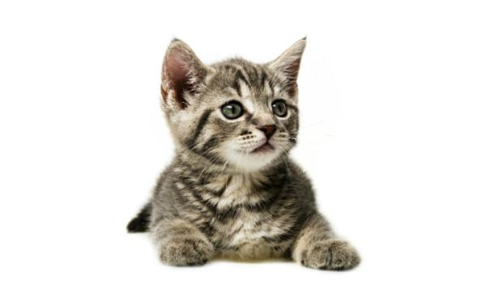

Sueño gatuno de verano
Todos sabemos la irresistible tentación que sienten nuestros pequeños de "apoderarse" de ese gran helado que tanto disfrutamos en los días más calurosos. Pues bien, ahora ya no necesitan caer en la tentación :-D Este delicioso helado lo hemos creado exlusivamente para ellos, para que puedan relamerse como nunca de lo que más les gusta y para que tú puedas divertirte viéndoles tan entusiasmados. Y, sí, también para que tú puedas saborear tu helado sin sentirte culpable ;-)
Ingredientes
- 150mg Puro salmón
- 75ml Agua
- 1 pizca Extracto de mejillón de labio verde
Preparación
